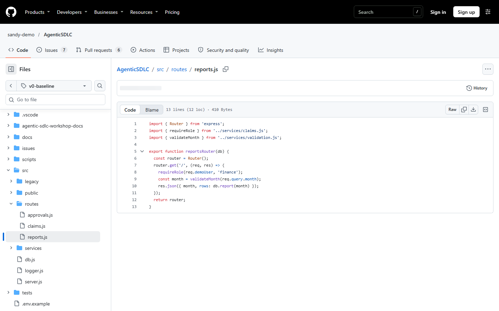

S03 · Level 1 — Inner loop
Pakai skill untuk endpoint baru
Gunakan prosedur new-endpoint: kontrak, validasi, service, logging, tes, dan docs.
Status latihan: Route baseline sudah direkam · penggunaan skill di Agent Mode belum direkam. Ikuti langkah · Ulangi dari awal.
Masalah yang dihadapi
Developer membangun route dengan cara berbeda; Yoga sulit membandingkan log.
Kerugian: Monitoring dan review jadi lebih lama.
Masalah pada baseline
src/routes/reports.js
Lihat potongan atau catatan sumber
res.json({ month, rows: db.report(month) }); // validasi ada, log belum adaSolusi dan alur
Gunakan prosedur new-endpoint: kontrak, validasi, service, logging, tes, dan docs.
- Kenali route pada baseline. Buka src/routes/reports.js pada v0-baseline dan lihat validasi serta perannya. Untuk memeriksa titik awal endpoint komentar, mulai npm run demo:before di terminal pertama. Jalankan blok ini di terminal PowerShell kedua; cari 200 untuk detail klaim dan 404 untuk endpoint komentar yang belum ada.
- Panggil skill lewat Agent Mode. Di checkout latihan klik Chat → Agent, kirim prompt. Pada baseline, GET detail klaim pemilik menghasilkan 200 sedangkan POST komentar menghasilkan 404.
- Cocokkan file dan perilaku. Buka Changes di Source Control dan docs/api.md berdampingan. Cari router, service, test untuk sukses dan akses ditolak, logger non-PII, dan kontrak docs. Screenshot diff hasil belum tersedia.
- Cek selesai latihan. Pada baseline, GET /claims/1 sebagai pemilik memberi 200; POST komentar belum ada (404). Ini membuktikan titik awal. Jika endpoint latihan dibuat, uji akses pemilik, tolak pengguna lain sesuai kontrak yang ditulis, validasi isi, dan periksa bahwa logger hanya memuat ID atau metadata, bukan isi komentar.
- Cara merekam hasil live. VS Code Agent harus bisa memuat skill new-endpoint. Berikan tugas POST /claims/:id/comments pada checkout latihan. Pakai rute laporan sebagai contoh validasi yang sudah ada, bukan alasan untuk mengasumsikan endpoint komentar sudah tersedia. Setiap nama di bawah menunjuk hasil yang perlu benar-benar terjadi. Gambar pembanding di atas tetap bisa dipakai untuk belajar, tetapi bukan pengganti bukti live. Ini daftar petunjuk gambar, bukan perintah terminal.
Langkah demo
Kenali route pada baseline
Buka src/routes/reports.js pada v0-baseline dan lihat validasi serta perannya. Untuk memeriksa titik awal endpoint komentar, mulai npm run demo:before di terminal pertama. Jalankan blok ini di terminal PowerShell kedua; cari 200 untuk detail klaim dan 404 untuk endpoint komentar yang belum ada.
$detail = curl.exe -sS -o NUL -w '%{http_code}' -H 'x-demo-user: 1' http://127.0.0.1:3000/claims/1 $comment = curl.exe -sS -o NUL -w '%{http_code}' -H 'x-demo-user: 1' --json '{"message":"Catatan latihan"}' http://127.0.0.1:3000/claims/1/comments "GET detail: $detail; POST komentar: $comment" Perbesar S03-before-annotated.png
Perbesar S03-before-annotated.pngSumber GitHub · 1. Buka src → routes → reports.js pada tag v0-baseline. · 2. GET yang ada memeriksa peran Finance dan memvalidasi month. File ini bukan hasil dari skill; perhatikan batas route dan validasi sebelum menambah endpoint baru. Panggil skill lewat Agent Mode
Di checkout latihan klik Chat → Agent, kirim prompt. Pada baseline, GET detail klaim pemilik menghasilkan 200 sedangkan POST komentar menghasilkan 404.
Buat POST /claims/:id/comments memakai skill new-endpoint. Batasi akses ke klaim, validasi isi, dan jangan catat isi komentar ke log.Cocokkan file dan perilaku
Buka Changes di Source Control dan docs/api.md berdampingan. Cari router, service, test untuk sukses dan akses ditolak, logger non-PII, dan kontrak docs. Screenshot diff hasil belum tersedia.
npm testCek selesai latihan
Pada baseline, GET /claims/1 sebagai pemilik memberi 200; POST komentar belum ada (404). Ini membuktikan titik awal. Jika endpoint latihan dibuat, uji akses pemilik, tolak pengguna lain sesuai kontrak yang ditulis, validasi isi, dan periksa bahwa logger hanya memuat ID atau metadata, bukan isi komentar.
Titik awal yang dicari: GET detail: 200; POST komentar: 404 Perbesar S03-local-result.png
Perbesar S03-local-result.pngOutput lokal yang dirender · bukan layar portal · Output pemeriksaan lokal S03: Urutan prosedur dalam skill repo; Cek kontrak sebelum membuat endpoint. Cara merekam hasil live
VS Code Agent harus bisa memuat skill new-endpoint. Berikan tugas POST /claims/:id/comments pada checkout latihan. Pakai rute laporan sebagai contoh validasi yang sudah ada, bukan alasan untuk mengasumsikan endpoint komentar sudah tersedia. Setiap nama di bawah menunjuk hasil yang perlu benar-benar terjadi. Gambar pembanding di atas tetap bisa dipakai untuk belajar, tetapi bukan pengganti bukti live. Ini daftar petunjuk gambar, bukan perintah terminal.
1. S03-01-skill-loaded.png Di Chat → Agent, minta POST /claims/:id/comments menggunakan skill new-endpoint. Foto saat sesi benar-benar memperlihatkan skill dimuat, bukan saat hanya mengetik nama skill. 2. S03-after.png Setelah edit, buka route/service dan docs/api.md berdampingan. Tunjukkan validasi pemilik, format error, logger metadata, serta jalankan tes sukses dan penolakan. Ambil hanya bila diff dan hasil tes berasal dari checkout itu.
Sebelum dan sesudah


Perbesar S03-before.pngS03-after.png| Bagian | Sebelum | Sesudah / target |
|---|---|---|
| Perilaku | GET detail sudah ada; POST /claims/1/comments masih HTTP 404. | Target: POST dengan validasi dan pembatasan akses, tes dan kontrak docs. Belum diimplementasikan. |
| Bukti visual | Ada tangkapan lokal. | Belum direkam. |
| Keputusan | Peserta membaca keadaan awal. | Manusia memeriksa hasil sebelum meneruskan. |
Manfaat
- Prosedur bisa dipakai berulang tanpa menyalin prompt panjang.
Bukti dan sumber
Template issue S03 · Data latihan dan pengukuran.
Bukti GitHub live
Perbesar S03-before-annotated.png2 layar yang belum direkam
S03-01-skill-loaded.pngS03-after.png
Ulangi latihan
Tinggalkan checkout yang sudah diedit dan buat checkout baru dari v0-baseline. Jangan pakai git reset --hard atau git clean pada direktori kerja bersama.
npm run reset -- --fresh